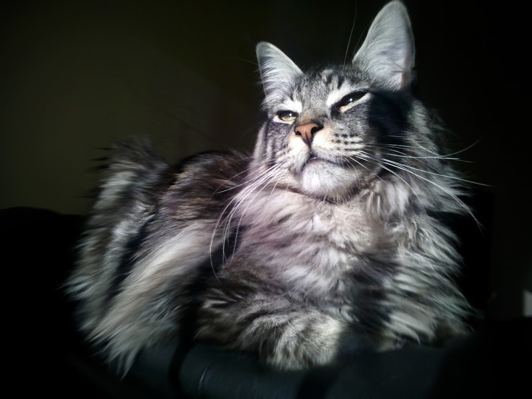

Welcome To Pip&Paws
PipandPaws has specialized in purebred Maine Coons since 2005. Pip Quinn has over 15 years experience with Maine Coons, her bloodlines were selected for health, strong bone, large size, correct body type, vibrant colors, and patterns. Pip and Paws is a member in good standing with the CFA (Cat Fanciers Association) and TICA (The International Cat Association).
Quality
We are a closed cattery that is free of genetic disorders. To ensure top quality our breeding cats they have always been health tested negative for HCM, SMA and PKD. We test all breeders since Hypertrophic Cardiomyopathy (HCM) is common and we do not want other defects to become common. We keep our cats in a clean, family environment. They are given tons of affection and socialization with other cats, our three dogs, and our grandchildren of all ages. PipandPaws is located in Comfort, Texas which is near San Antonio, Dallas and Houston, Texas. If approved we are usually close enough for new homes to pick up from Oklahoma, New Mexico and Arkansas.
Maine Coons

PipandPaws has specialized in purebred Maine Coons since 2005. Pip Quinn has over 15 years experience with Maine Coons, her bloodlines were selected for health, strong bone, large size, correct body type, vibrant colors, and patterns. Pip and Paws is a member in good standing with the CFA (Cat Fanciers Association) and TICA (The International Cat Association).
Maine Coon Kittens
Maine Coon Kittens leave already altered, micro-chipped, vet checked, dewormed, and vaccinated with age appropriate vaccine shots. Maine Coon Kittens will be micro-chipped to ensure safe return should your coon get lost outside. Ethical Maine Coon Breeder only allow kittens for sale to go to new homes only after twelve weeks of age or older per CFA & TICA request. By then kittens have had their basic inoculations and developed the physical/social stability needed for a new home, showing, or being transported.